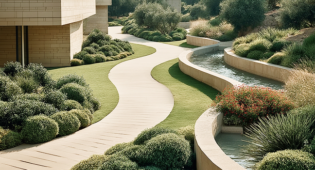
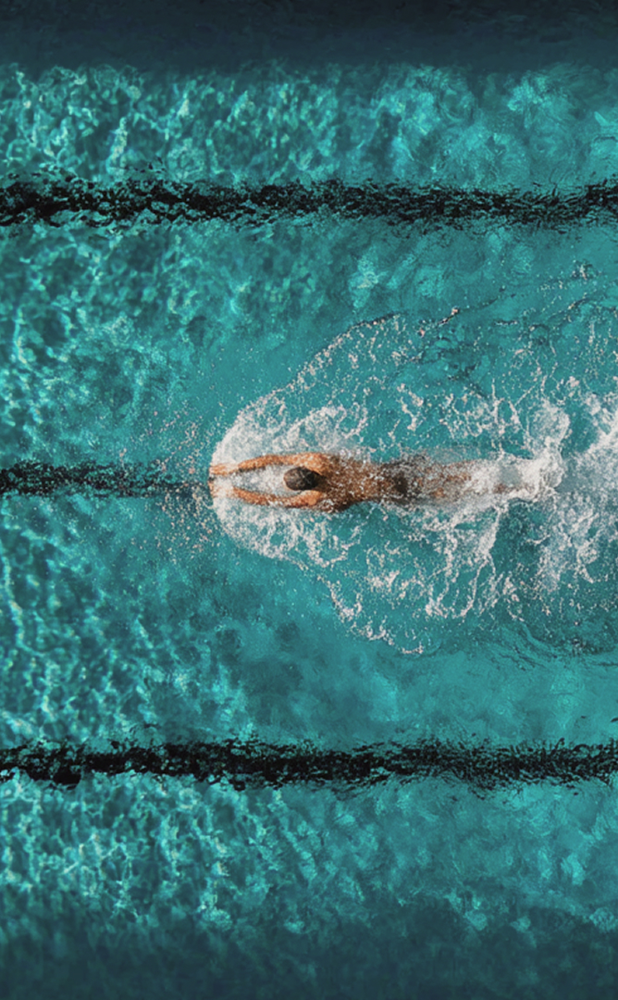
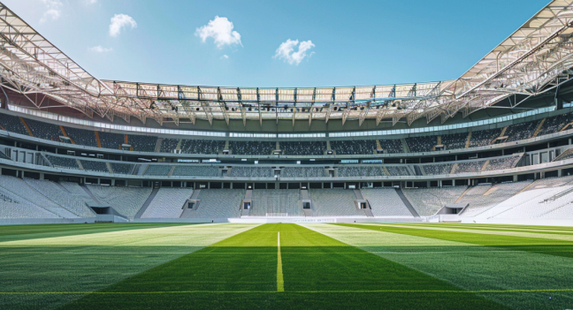
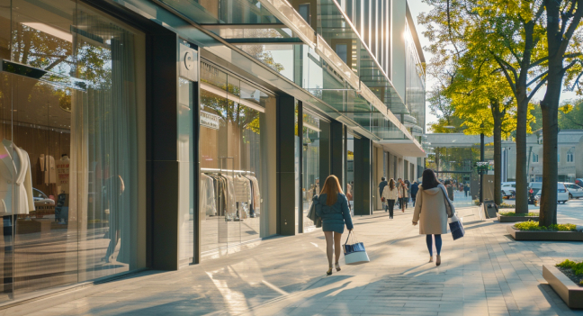
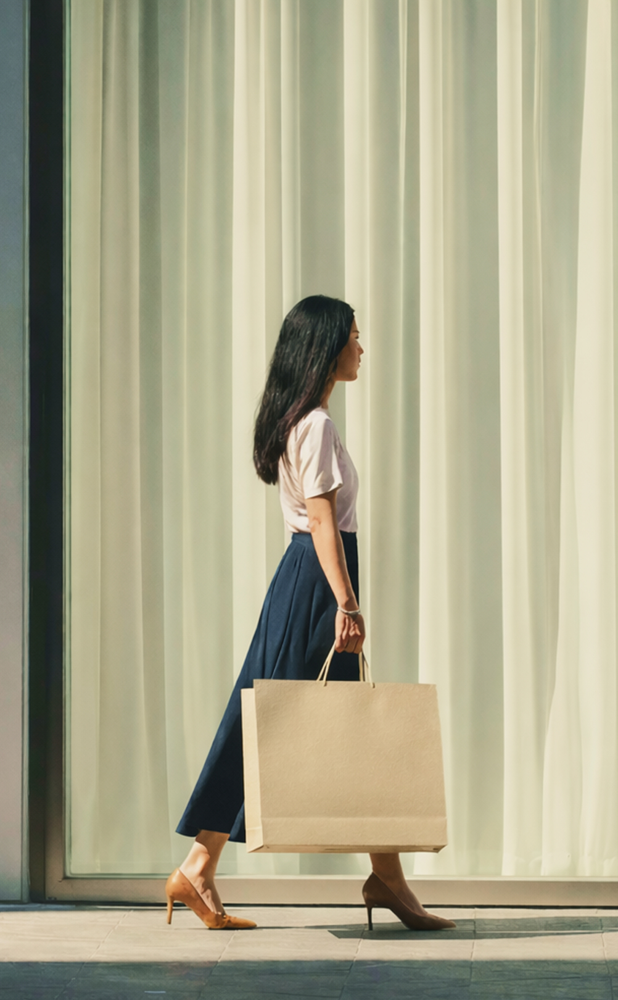
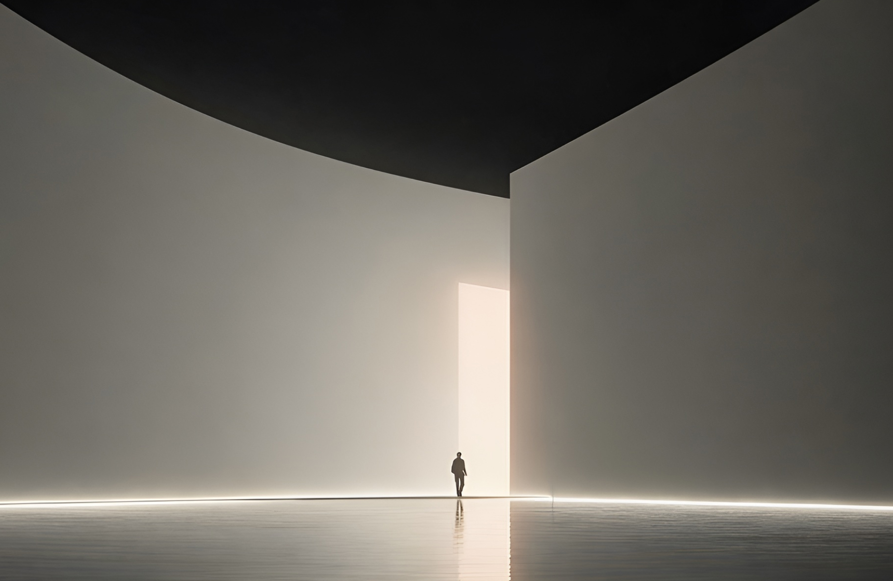
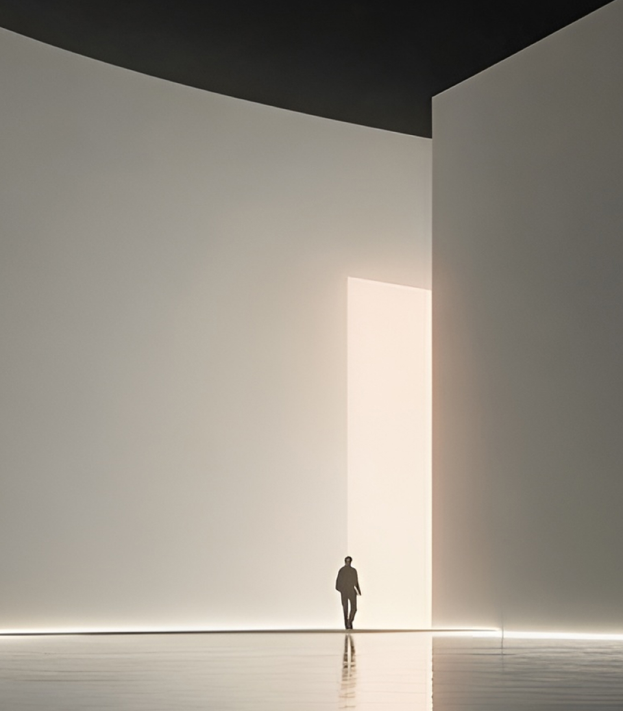
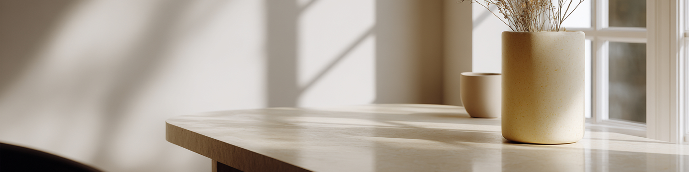
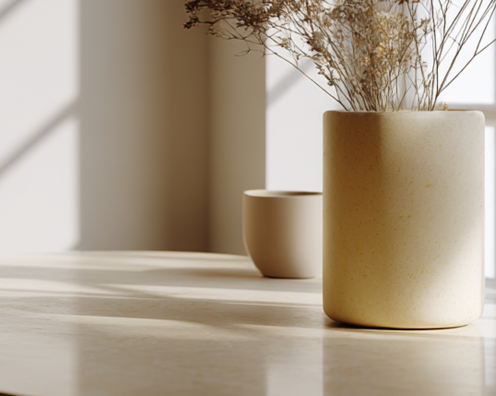

STORY`, subTitle: 'IPARK는 삶의 방식을 그립니다.', desc: `IPARK는 삶의 흐름이 변화하는 시대 속에서 주거, 도시, 리테일, 레저, 스포츠, 문화 등
다양한 영역을 넘나들며 주거를 중심으로 도시와 일상, 다양한 경험의 장면들을 하나로 이어갑니다.`, })%>
Life in Transition
공간에서 문화까지,
일상에서 경험까지
삶은 하나의 공간에 머물지 않습니다.
일과 휴식, 관계와 시간, 기술과 감정이 자연스럽게 이어지며 하나의 경험이 됩니다.
우리는 이 변화 속에서 삶을 하나의 흐름으로 이해할 수 있는 새로운 기준이 필요하다고 생각했습니다.
IPARK는 그 흐름을 이해하고 삶의 경험을 담는 라이프스타일 브랜드입니다.
IPARK는 이제 주거 브랜드를 넘어, 고객의 일상에 가장 가까운 HDC LIFE 영역의 비전을
연결하는 ‘세계관’ 입니다.
Core of Life Experience
삶의 장면을 연결하는 하나의 경험
- IPARK현대산업개발
- IPARK아이앤콘스
- IPARK마리나

주거 · 공간 · 도시를 설계하고 구현합니다.
- 호텔IPARK
- IPARK리조트
- IPARK마리나
여가와 휴식으로 감각적 경험과 감동을 전합니다.

- IPARK스포츠

건강한 삶의 리듬과 교감을 더합니다.
- IPARK몰
- IPARK신라면세점
- IPARK영창

새로운 감각의 체험을 통해
다양한 취향과 라이프스타일을 제시합니다.

Brand Identity
Visionary
Life Creator
삶의 비전을 설계하는 창조자
IPARK는 도시와 일상을 새롭게 디자인하여,
사람들의 삶을 더욱 풍부하고 감각적인
경험으로 채우며
‘더 나은 삶의 형식(Form of Better Life)’을
실현합니다.


Brand Story
더 나은 삶의 형식을 위한
IPARK의 이야기
“더 나은 삶의 형식(Form of Better Life)”은 삶의 기반을 이루는 공간, 도시, 문화, 경험이
사람들의 일상과 장면, 도시의 흐름 속에서 하나로 연결되는 상태를 의미합니다.
이는 곧 삶을 담는 물리적 공간(주거, 도시, 건축)과 삶을 풍요롭게 만드는 문화적 경험(예술, 자연,
커뮤니티)이 분리되지 않고 어우러져 구현되는 Integrated Life Experience입니다.
Integrated Life Experience는 현재와 미래를 잇는 다리입니다.
오늘의 생활에 편안함과 안정을 주는 동시에, 내일의 도시와 사회가 요구하는 지속가능성, 혁신,
포용성을 함께 담습니다.
따라서 “더 나은 삶”은 단순한 미래의 목표가 아니라, 과거와 현재, 그리고 미래의 유산까지 이어가는 진화의 미션입니다.
또한 이는 인간적 감각과 도시적 비전이 만나 삶의 근간이 되는 지점입니다.
집 안에 들어오는 빛과 바람, 움직임의 편안함 같은 개인의 하루의 감각이 도시 전체의 교통, 환경,
커뮤니티, 문화 네트워크와 자연스럽게 맞물릴 때 비로소 완성되는 Form of Better Life는
가장 인간적이고 풍요로운 삶의 형식입니다.


Brand Principle
비전을 현실로
바꾸는 기준
-
깊은 이해에서 시작되는
더 나은 일상IPARK는 삶의 장면을 깊이
이해하는 것에서 출발합니다.
작은 불편을 줄이고, 반복되는 순간을
더 편안하게
만드는 기준은
일상의 일부가 됩니다. -
삶의 순간을 하나의 흐름으로
바라보는 시선운동과 휴식, 혼자만의 시간과
함께하는 시간,
도시와 여가의 경계를 나누지 않고
하나의 흐름으로 이어 봅니다. -
생각을 경험으로 잇는
분명한 힘IPARK가 제안하는 삶의 방식은
말에 머무르지 않습니다.
일상의 장면 속에서,
가장 분명한 변화로 이어집니다. -
사람과 사회를
중심에 두는 태도속도와 취향, 각자의 리듬을 존중하는
것에서 시작해
누구에게나 같은 삶이 아닌,
각자의 방식이
자연스럽게
존중 받는 경험을 지향합니다.